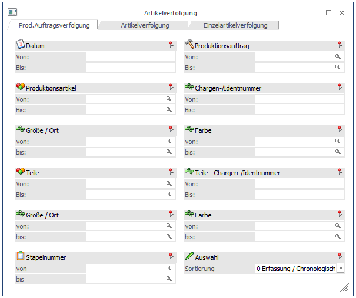
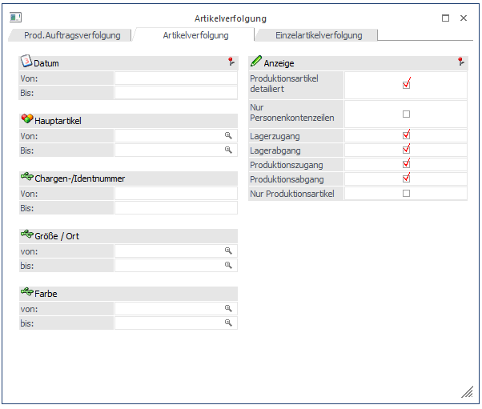
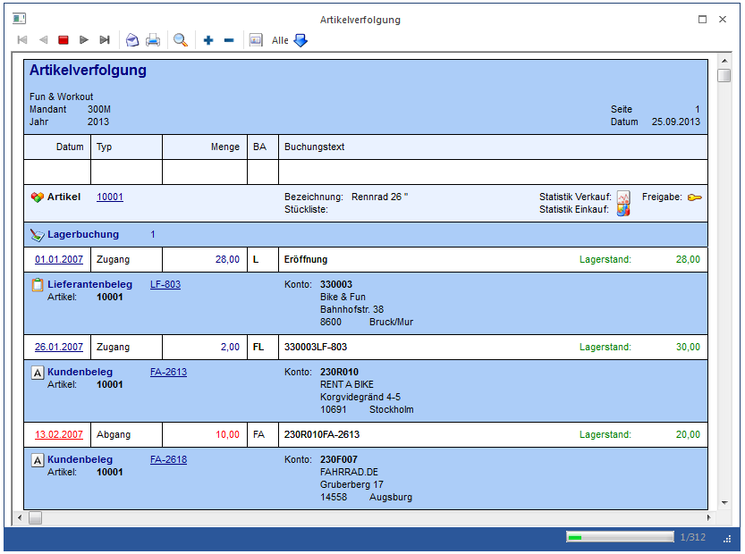
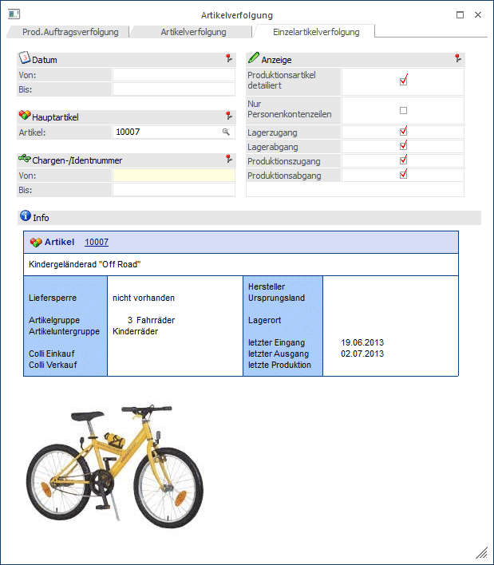
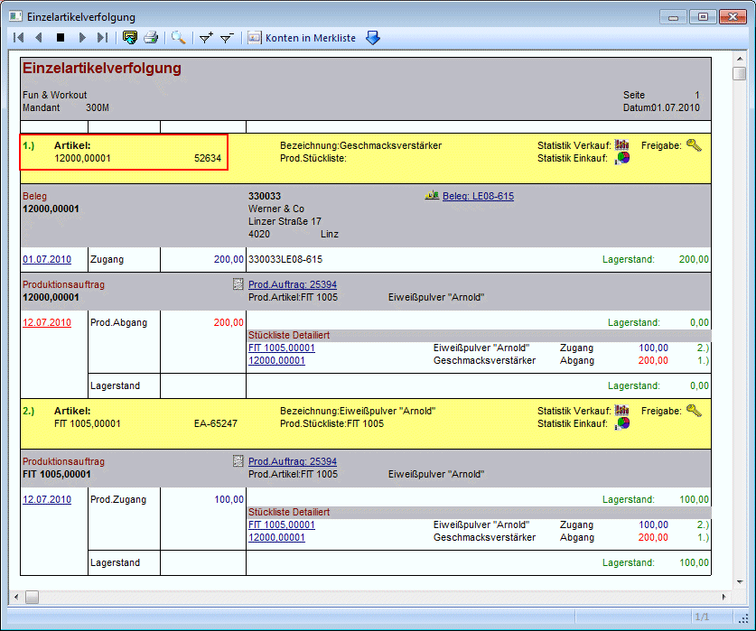
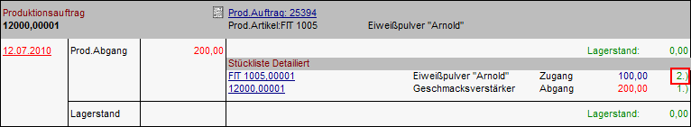
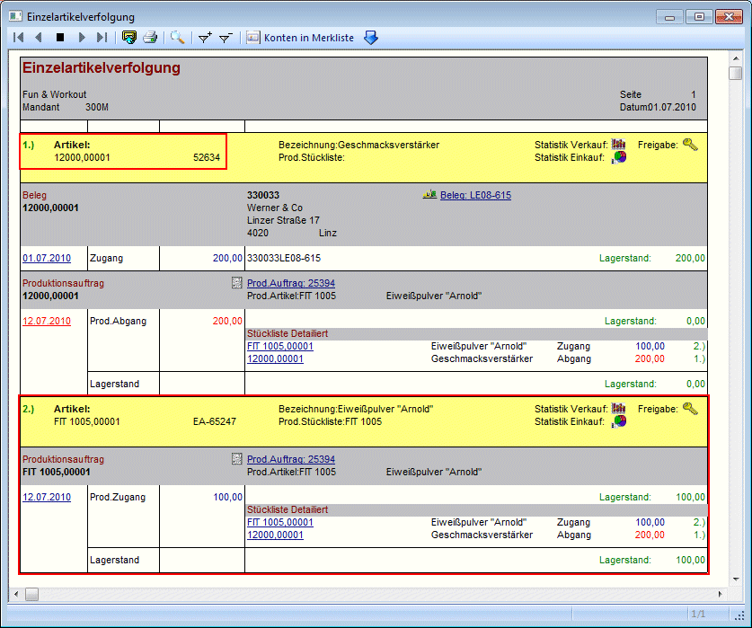
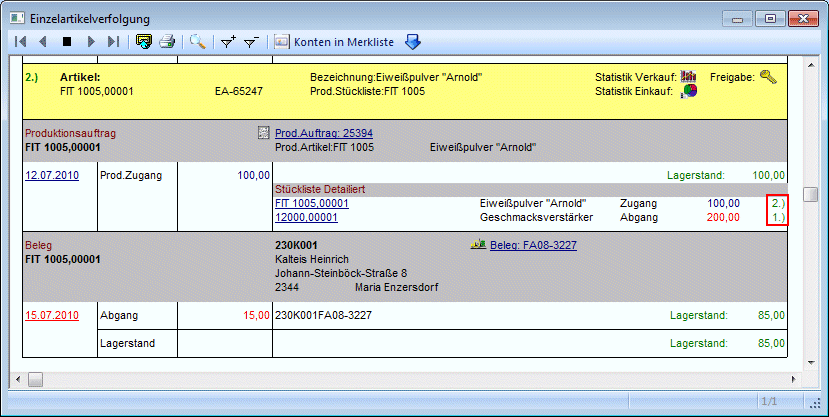
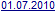

Im Menüpunkt
1 WinLine Produktion
1 Auswertungen
1 Artikelverfolgung
sowie im Menüpunkt
1 WinLine Fakturierung
1 Auswertungen
1 Artikellisten
1 Artikelverfolgung
kann lückenlos nachvollzogen werden, welche Artikel in einem Projekt oder in welchen Projekten ein Artikel vorgekommen ist, bzw. auch wann ein Artikel eingekauft, zur Produktion verwendet, und wieder verkauft wurde.
Dieser Menüpunkt ist in 3 Teile gegliedert:
1. Prod.Auftragsverfolgung

In diesem Register kann ausgewertet werden, welche Artikel in einem Projekt bzw. in welchen Projekten ein Artikel vorgekommen ist.
Dazu stehen folgende Selektionskriterien zur Verfügung:
Ø Datum von - bis
Einschränkung auf das Datum, zu dem das Projekt durchgeführt wurde. Es können auch Datümer aus bereits vergangenen WJ eingegeben werden (sofern die Daten noch vorhanden sind).
Ø Produktionsauftrag von - bis
Einschränkung der Projekte, die ausgewertet werden sollen.
Ø Produktionsartikel von - bis
Einschränkung der Produktionsartikel, die ausgewertet werden sollen. Als Produktionsartikel werden die Artikel verstanden, bei denen eine Produktionsstückliste hinterlegt ist.
Ø Chargen / Identnummer von - bis
Ø Ausprägung 1 von - bis
Ø Ausprägung 2 von - bis
Bei diesen Feldern können die entsprechenden Ausprägungen eingeschränkt werden, wobei hier die Ausprägungen der Fertigungsartikel gemeint sind.
Ø Teile von - bis
Einschränkung auf die Unterkomponenten, die ausgewertet werden sollen.
Ø Teile - Chargen / Identnummer von - bis
Ø Ausprägung 1 von - bis
Ø Ausprägung 2 von - bis
Bei diesen Feldern können die entsprechenden Ausprägungen eingeschränkt werden, wobei hier die für die Fertigung verwendeten Ausprägungen gemeint sind (verbaute Teile).
Ø Stapelnummer von - bis
Bei diesem Feld kann auch die Stapelnummern eingeschränkt werden.
Ø Auswahl
Hier kann die Sortierung ausgewählt werden. Zur Option stehen 3 Möglichkeiten:
ÿ 0 Erfassung / Chronologisch
ÿ 1 Produktionsauftrag
ÿ 2 Stapelnummer
2. Artikelverfolgung

In diesem Register kann eine "einstufige" Nachverfolgung von Artikeln ausgegeben werden.
D.h. z.B. wann (und von wem) wurde ein Artikel mit Chargen-, oder Seriennummer eingekauft, für welchen Produktionsauftrag wurde er verwendet, und wann (und für wen) wurde der Artikel wieder verkauft.
Ebenso kann die Auswertung natürlich "nur" lauten: wann und von wem wurde der Artikel eingekauft, und an wen und wann wieder verkauft.

Mittels Eingabefelder kann die Auswertung auf bestimmte Bereiche eingeschränkt werden:
Ø Datum von - bis
Einschränkung auf einen Zeitraum, für den die Artikelverfolgung ausgegeben werden soll.
Ø Hauptartikel von - bis
Einschränkung auf bestimmte Artikel
Ø Chargen-/Identnummer von - bis
Einschränkung auf bestimmte Chargen-, oder Identnummern
Ø Ausprägungsgruppe 1 / Ausprägungsgruppe 2 von - bis
Einschränkung auf Ausprägungen, die ausgewertet werden sollen.
Durch Aktivieren bzw. Deaktivieren der entsprechenden Optionen kann bestimmt werden, welche Zeilen auf der Auswertung ersichtlich sein sollen, und welche nicht.
ü Produktionsartikel
detailliert
Wird ein Artikel für einen Produktionsauftrag verwendet, so wird
bei aktivierter Option jener Artikel angezeigt der mit dem Verfolgten produziert
wurde (dafür ist natürlich auch Voraussetzung, dass die Option Produktionszugang
bzw. Produktionsabgang gewählt wurde).
ü Nur Personenkontenzeilen
Es
werden nur Zeilen angezeigt, die auch Personenkonten betreffen; d.h.
Eingangsfakturen, Ausgangsfakturen, aber auch auftragsbezogene Produktionen.
ü Lagerzugang / Lagerabgang
Die
Zeilen aus Lagerzugängen bzw. Lagerabgängen können wahlweise angezeigt oder
unterdrückt werden.
ü Produktionszugang /
Produktionsabgang
Die Zeilen aus Produktionszugängen bzw. Produktionsabgängen
können wahlweise angezeigt oder unterdrückt werden.
ü Nur Produktionsartikel
Es
werden nur jene Artikel angeführt, die im Artikelstamm das Kennzeichen
"Artikeltyp 2- Produktionsartikel" hinterlegt haben.
3. Einzelartikelverfolgung

In diesem Register kann eine "mehrstufige" Nachverfolgung von Artikeln ausgegeben werden.
D.h. z.B. wann (und von wem) wurde ein Artikel mit Chargen-, oder Seriennummer eingekauft, für welchen Produktionsauftrag wurde er verwendet, und wann (und für wen) wurde der Artikel wieder verkauft.
Zusätzlich kann durch die "Mehrstufigkeit" auch weiterverfolgt werden, was mit Artikeln passiert ist, die aus dem angegebenen Artikel produziert wurden.
Ebenso werden hierbei auch sogenannte Halbfertigprodukte, die den verfolgten Artikel beinhalten ausgegeben.
Beispiel
Verfolgt wird der Artikel 12000 - Geschmacksverstärker mit der Chargennummer 52634.
In der Auswertung wird dieser Artikel als Stufe 1 ausgewiesen.

Wird dieser Artikel in weiteren Artikeln verwendet (z.B. in einem Produktionsartikel), so wird dieser Artikel, sowie die weiteren Artikel in Folgestufen ausgewiesen.
In diesem Beispiel wird der Artikel 12000 mit der Chargennummer 52634 zur Produktion des Artikels FIT 1005 (mit der Seriennummer ER-65247) verwendet. Dieser Artikel wird in der Artikelverfolgung als "Stufe 2" ausgewiesen:

D.h. zum einen werden die jeweiligen Artikel in den einzelnen Zeilen mit den vergebenen Stufen angezeigt, und zum anderen werden die weiteren Stufen (Stufe 2, 3, usw.) auch separat angeführt.

Nachdem alle Zeilen der Stufe 1 angezeigt wurden, erfolgt die Ausgabe der Stufe 2, usw.

Auch dabei ist natürlich die Verknüpfung zu den anderen Stufen ersichtlich.
Mittels Eingabefelder kann die Auswertung auf bestimmte Bereiche eingeschränkt werden:
Ø Datum von - bis
Einschränkung auf einen Zeitraum, für den die Artikelverfolgung ausgegeben werden soll.
Ø Hauptartikel
Eingabe der Artikelnummer, die ausgewertet werden soll.
Ø Chargen-/Identnummer von - bis
Einschränkung auf bestimmte Chargen-, oder Identnummern
Durch Aktivieren bzw. Deaktivieren der entsprechenden Optionen kann bestimmt werden, welche Zeilen auf der Auswertung ersichtlich sein sollen, und welche nicht.
ü Produktionsartikel
detailliert
Wird ein Artikel für einen Produktionsauftrag verwendet, so wird
bei aktivierter Option jener Artikel angezeigt der mit dem Verfolgten produziert
wurde (dafür ist natürlich auch Voraussetzung, dass die Option Produktionszugang
bzw. Produktionsabgang gewählt wurde).
ü Nur Personenkontenzeilen
Es
werden nur Zeilen angezeigt, die auch Personenkonten betreffen; d.h.
Eingangsfakturen, Ausgangsfakturen, aber auch auftragsbezogene Produktionen.
ü Nur Produktionsartikel
Es
werden nur jene Artikel angeführt, die im Artikelstamm das Kennzeichen
"Artikeltyp 2- Produktionsartikel" hinterlegt haben.
ü Lagerzugang / Lagerabgang
Die
Zeilen aus Lagerzugängen bzw. Lagerabgängen können wahlweise angezeigt oder
unterdrückt werden.
ü Produktionszugang /
Produktionsabgang
Die Zeilen aus Produktionszugängen bzw. Produktionsabgängen
können wahlweise angezeigt oder unterdrückt werden.
Hyperlinks
In den Auswertungen "Artikelverfolgung" sowie Einzelartikelverfolgung" können weitere Auswertungen aufgerufen, bzw. Aktionen durchgeführt werden:
Ø - Statistik Verkauf
Durch Anwählen dieses Buttons wird die Verkaufsstatistik für den verfolgten Artikel, bzw. bei Mehrstufigkeit für den jeweiligen Artikel aufgerufen, bei dem der Button gedrückt wurde (Stufe1, Stufe 2, .... )
Ø - Statistik Einkauf
Durch Anwählen dieses Buttons wird die Einkaufsstatistik für den verfolgten Artikel, bzw. bei Mehrstufigkeit für den jeweiligen Artikel aufgerufen, bei dem der Button gedrückt wurde (Stufe1, Stufe 2, .... )
Ø - Freigabe
Mittels dieses LINKS wird das Fenster "Artikelfreigabe" geöffnet, in dem für den jeweiligen Artikel der Freigabestatus geändert werden kann.
Ø - Belegnummer
Durch Anwählen der Belegnummer wird das Belegmanagement aufgerufen und auf den Kunden sowie auf den Beleg eingeschränkt.
Ø

- BuchungsdatumWird das Buchungsdatum angewählt, so wird die Auswertung neu gestartet und nur auf das gewählte Datum eingeschränkt.
Ø - Prod.Auftragsnummer
Wir die Produktionsauftragsnummer angewählt, so wird die Produktionsliste für diesen Auftrag aufgerufen und angezeigt.
Ø  Ausgabe
Ausgabe
Die Ausgabe der Liste wird durch Anklicken des Drucken-Buttons ausgelöst, wobei aus der Auswahllistbox die Art des Ausdrucks (Bildschirm oder Drucker) ausgewählt werden kann.
Ø ENDE-Button
Durch Drücken der ESC-Taste wird das Fenster geschlossen.
Ø Filter-Button
Über den Filter-Button können noch zusätzliche Selektionen vorgenommen werden, wobei die Filterfunktion nur bei den Auswertungen Artikelverfolgung bzw. Einzelartikelverfolgung zur Verfügung steht.